DIY Fidget
Puzzle
A build-it-yourself rotating fidget puzzle designed around Smartivity's existing PP ball inventory, made with MDF. It went from brief to approved prototype in 3 weeks.
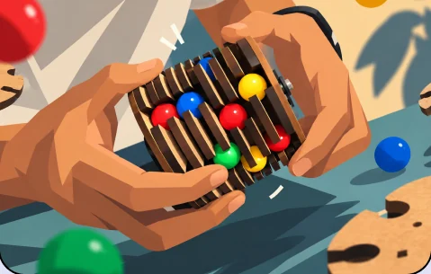
Built around 14mm balls.
Design and develop a toy using Smartivity materials, incorporating 14mm PP (polypropylene) balls from the existing product portfolio, while retaining the original form and user experience.
The toy's housing should be designed around the balls, ensuring the assembly is safe, intuitive, and feasible for children aged 6 and above.
- Constraints
- 14mm PP balls
- Smartivity MDF
- Ages 6+
- Safe, intuitive assembly
Reference products
To understand how ball-based mechanisms are typically used in toys, I studied a range of reference products from classic rotating puzzles to sensory and fidget toys.
The insight ↓
Research and observation pointed to one clear pattern: kids are drawn to rotating and turning motions. The tactile, repeatable action is satisfying on its own, no theme required. This became the anchor for the concept.
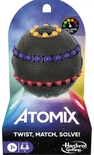
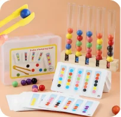
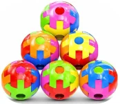
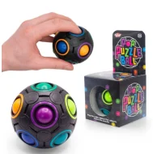
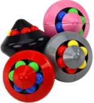
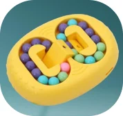
I looked specifically at how balls were housed and constrained, what mechanisms drove interaction, and how existing products balanced play value with safety for younger age groups.
A Rubik's Cube,
rebuilt with balls.
Building on this insight, I explored concepts that combined rotational play with the existing ball inventory. The direction that stood out was a cylindrical form inspired by the mechanics of a Rubik's Cube but reimagined with balls integrated into the rotating structure instead of cube faces.
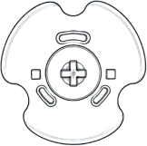
Three rounds to the right click.
-
I
Prototype I
Clearance test
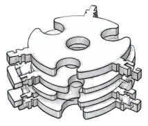
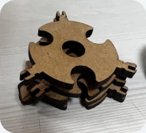
A sample prototype was made to test the ball clearance and mechanism.
Ball sets— testing fit -
II
Prototype II
Form test
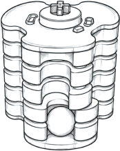
fidgety form ↓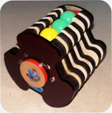
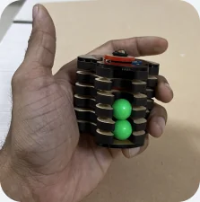
Shape was refined to be more fidgety and comfy. Built it with just three sets of PP balls to test the form. Too easy to solve, but confirmed the core rotation felt right.
Ball sets -
III
Prototype III
Final mechanism
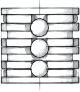
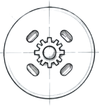
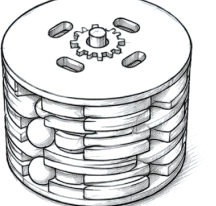
refined to circular ↓ more slots, more challenge ↑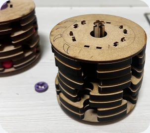
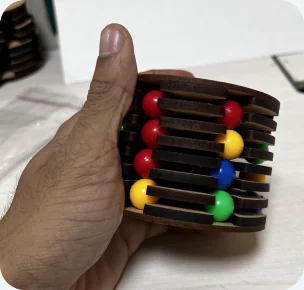
The number of ball slits was increased from three to six sets, adding complexity to make the puzzle more challenging and engaging. A detent mechanism was also introduced at the ball contact points, adding tactile and audible click feedback with every rotation.
Ball sets
Turn it. Hear it click.
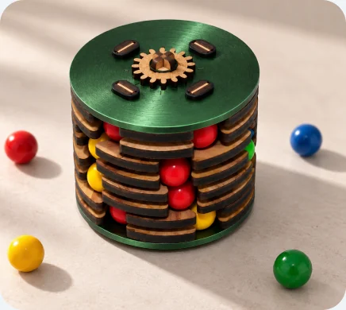
6 ball sets · click detent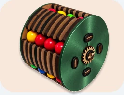
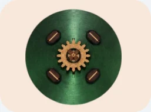
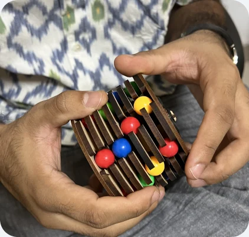
turn it, hear it click
Six ball sets, one rotating cylinder, and a click detent you can feel in your fingers. Sound on for the full effect.
Design approved.
Signed off by the lead designer, from brief to a working, clicking prototype in 3 weeks.